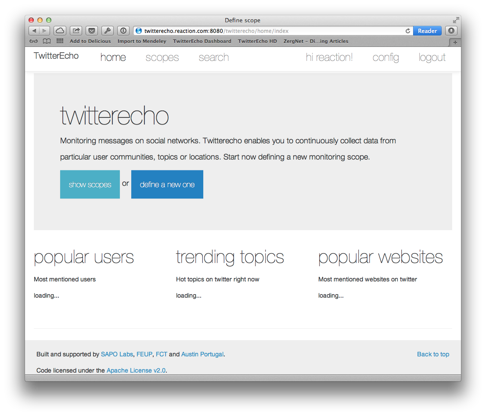
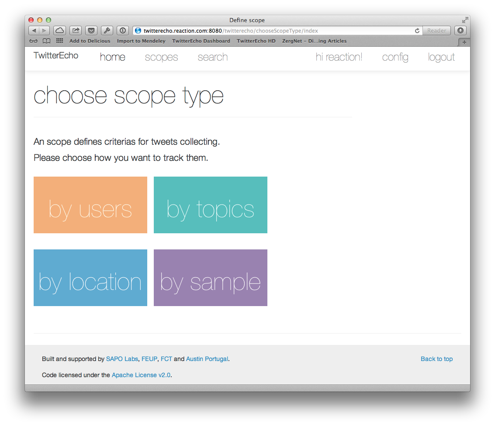
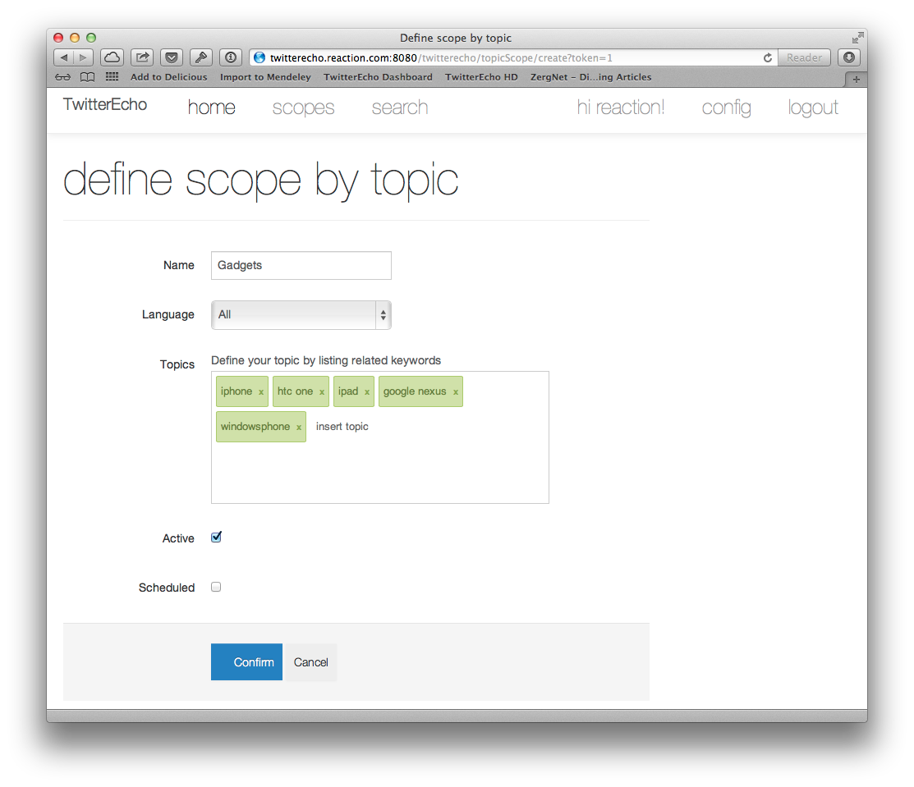
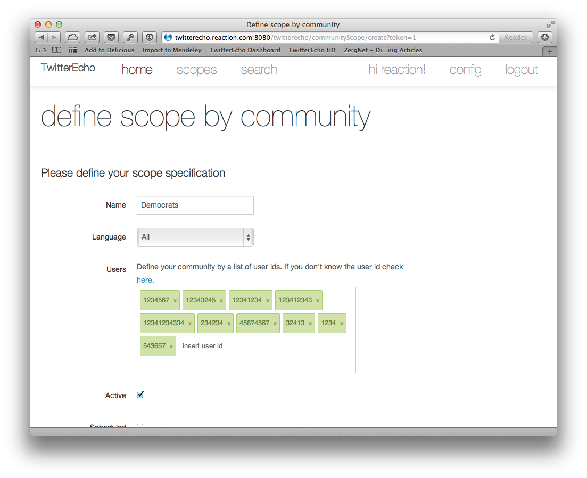

User Interface¶
Twitterecho provides an user interface to easily manage your datasets. This is the home page for the scope manager module.
The next step is to define a new Scope.
Defing Scopes¶
Scopes are definitions about how to collect the tweets. The user defines a criteria wich can be based on keywords, users or location. User also has to option not to define any criteria, wich will build a dataset with random sample tweets. After choose the scope type user will be asked to authorize connecting to his Twitter account.
Setup scope based on keywords¶
On its user interface TwitterEcho refers a group of keywords as a topics. Its also possible to specify a particular date to start the crawling and when to finish it.
Scopes based in a particular community¶
On its user interface TwitterEcho refers a group of users ids as a community. Here you must specify a list of users id. If you don’t know the id its possible to convert the username to user id.
Based on sample stream¶
Is also possible define an scope only for sample.
** TODO include screenshoot
Scope based in a particular location¶
** TODO

{kind=link}
{kind=link}
{kind=link}
{kind=link}